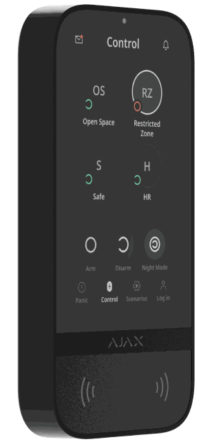
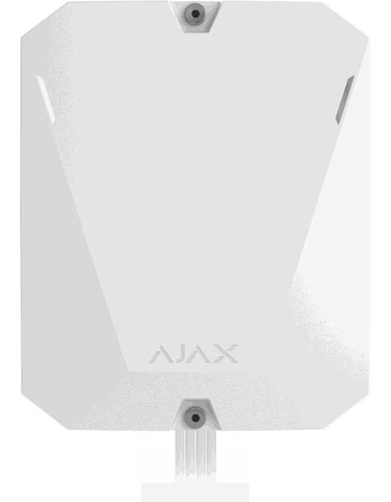
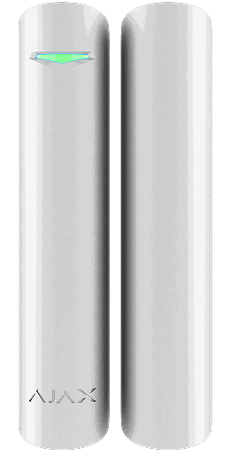

Professionnels
Sécurité pour commerces, bureaux et multi-sites à La Réunion.
Architectures évolutives, option Superior pour les projets exigeants, interlocuteur local pour l’étude, l’installation sur site et le suivi. Partenaire agréé Ajax Systems.

Cas d’usage
Des sites très différents, une même exigence.
Commerces & retail
Ouvertures, volumes, abords, sirènes, vidéo pour lever le doute.
Bureaux
Multi-zones, horaires, utilisateurs multiples, scénarios d’armement.
Entrepôts & locaux techniques
Périmètres, portées radio, extensions de couverture.
Restaurants & CHR
Protection hors service, alertes, automatismes utiles au quotidien.
Multi-sites
Vision consolidée, interlocuteur unique AS974 sur toute l’île.
Incendie (ERP / sites sensibles)
Nous étudions les dispositifs Ajax adaptés. Les obligations réglementaires (ERP, etc.) sont analysées au cas par cas : aucune conformité n’est affirmée sans étude dédiée.

Superior
Quand Superior a du sens.
Sites multi-zones, exigences élevées, complément filaire : la ligne Superior s’adresse aux projets ambitieux.
Sélection Superior
Le matériel des projets exigeants.




Options
Maintenance & télésurveillance. Maintenance selon contrat. Télésurveillance : option [À CONFIRMER].
Parlons de votre site.
Étude professionnelle sur place — toute l’île.